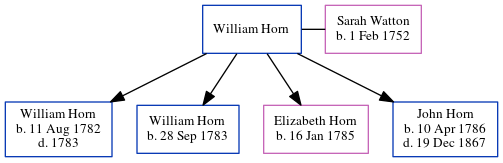

William Horn
[ Home ] | [ Calendar ] | [ Surnames Index ] | [ Errors ] | [ Family History ]William Horn was the 4 times great-grandfather of Nigel Horne and married Sarah Watton (with whom he had 4 children: William, William, Elizabeth and John) at St John the Baptist's Church, Margate, Kent, England on 2 Jul 17811.
Children
- William was born on 11 Aug 1782
- William was born on 28 Sept 1783
- Elizabeth was born on 16 Jan 1785
- John was born on 10 Apr 1786
Citations
- England Marriages 1538-1973 - Findmypast
Media
Canterbury Marriages Transcription - GBPRS-CANT-M-97111630-2
England Marriages 1538-1973 - R_847892465
England Marriages 1538-1973 - R_848617036
Kent, Canterbury Archdeaconry burials - GBPRS/CANT/D/95091757
Kent, Canterbury Archdeaconry marriages - GBPRS/CANT/M/97111630/1
Kent marriages and banns - GBPRS/CANT/M/97118789/1
Family Tree
Map
Generated by ged2site. Last updated on Jul 3, 2024